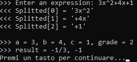
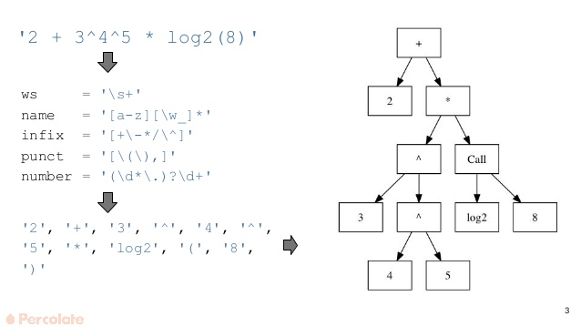
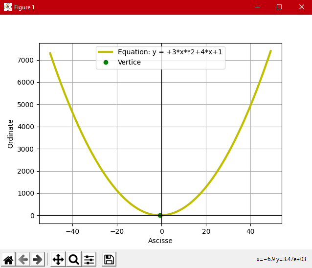
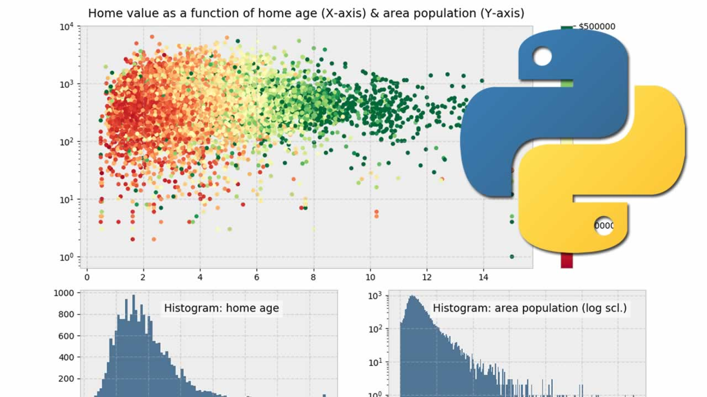

Python è un linguaggio di programmazione molto famoso che, grazie alla sua sintassi
particolarmente intuitiva, può essere un buon punto di partenza per quelli
che iniziano a programmare.
Ma prima, vediamo le sue caratteristiche principali:
- linguaggio interpretato, non compilato
- scrittura ordinata del codice
- sintassi semplice ed intuitiva

Le applicazioni di Python sono molteplici: dalla gestione di una marea di dati
in tabella, ai grafici di funzioni matematiche... all'analisi di espressioni più o meno
semplici, come potete vedere nella pagina... :)


... il grafico dell'equazione mostrata qui sopra, realizzato con una libreria esterna:
matplotlib, che va solitamente a braccetto con numPy, un'altra libreria che si rivela
piuttosto utile quando bisogna gestire un certo problema di tipo matematico.
